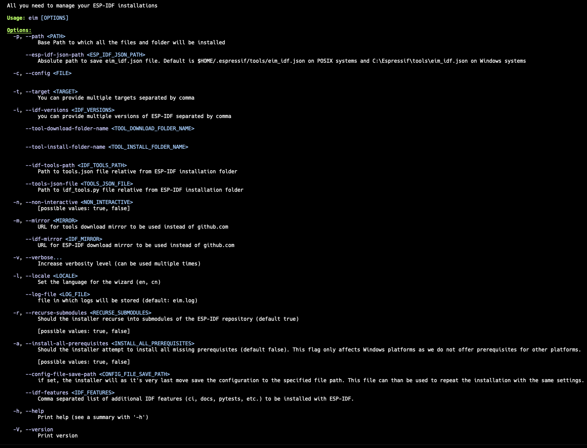
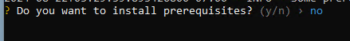
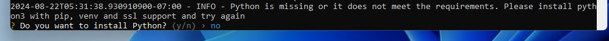
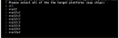
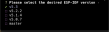
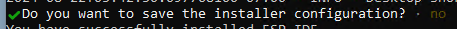
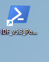

ESP-IDF Installation Manager
The ESP-IDF Installation Manager (EIM) simplifies the setup process for ESP-IDF and integrated development environments (IDEs) across multiple platforms. This cross-platform installer facilitates the installation of prerequisites, ESP-IDF itself, and essential tools, offering a consistent and user-friendly experience on macOS, Linux, and Windows.
Features
- Cross-platform
- Configurable
- Repeatable
- Easy to use
- Multilingual
- Easily deployable
For more about this project, please see https://github.com/espressif/idf-im-cli.
Table of Contents
Prerequisites
Below are the minimum requirements for running the ESP-IDF. The Installation Manager itself has no dependencies, but during its run, it checks the system to ensure that the dependencies of IDF are met.
Windows
To get started with ESP-IDF, you need Git, CMake, Ninja, and Python. The ESP-IDF Installation Manager will verify the required prerequisites on your system and install any that are missing.
For more details about ESP-IDF prerequisites, please refer to the ESP-IDF Windows prerequisites documentation.
Note: If any of these prerequisites are missing, the installer will prompt you to install them. If you agree, the installer will automatically install and configure everything required to run ESP-IDF.
macOS
- dfu-util
- cmake
- ninja
- python with pip capable of creating a virtual environment and doing SSL requests
Note: On POSIX systems, the installer will check for the required prerequisites. If they are not met, the installation will not proceed.
Linux
- git
- cmake
- ninja
- wget
- flex
- bison
- gperf
- ccache
- libffi-dev
- libssl-dev
- dfu-util
- libusb-1.0-0
- python with pip capable of creating a virtual environment and doing SSL requests
Note: On POSIX systems, the installer will check for the required prerequisites. If they are not met, the installation will not proceed.
Configuration
Configuration can be done in several ways. The priority order is as follows: configuration files are overridden by environment variables, which in turn can be overridden by command-line arguments. If you go through the wizard, the choices you make there will take the highest precedence.
Wizard
To start the wizard, simply run eim without any parameters. The wizard will guide you through the
installation process. Generally, you can use the arrow keys to navigate between options, the spacebar to select
options, and the Enter key to confirm your selections.
As the final step, the wizard will allow you to save your installation choices as a configuration file. This file can be shared or reused in future installations to replicate the same setup.
Command Line Arguments
The easiest way to see all possible command-line arguments is to run eim --help, which will display
the following help screen:

Config File
The installer can use a TOML configuration file. By default, it looks for this file at
./config/default.toml, but you can specify a different path using the --config
command-line argument.
Here is an example of what a configuration file might look like:
path = "/tmp/esp-new/"
idf_path = "/tmp/esp-new/v5.4/esp-idf"
esp_idf_json_path = "/Users/petrgadorek/.espressif/tools"
tool_download_folder_name = "dist"
tool_install_folder_name = "tools"
target = ["all"]
idf_versions = ["v5.4"]
tools_json_file = "tools/tools.json"
idf_tools_path = "tools/idf_tools.py"
config_file_save_path = "eim_config.toml"
non_interactive = false
wizard_all_questions = false
mirror = "https://github.com"
idf_mirror = "https://github.com"
recurse_submodules = true
install_all_prerequisites = false
Environment Variables
You can override any of the configuration settings by exporting environment variables prefixed with ESP_. For example, to override the target setting, you would use ESP_TARGET.
Installation
Before Installation
Windows
Please note that EIM is a command-line application. It is recommended to run it manually from the command shell,
with PowerShell being the only supported shell on the Windows platform. To start PowerShell, open the Start menu
and begin typing “PowerShell.” The system should present the PowerShell terminal option after the first few
letters. Ensure that you do not use the x86 version of PowerShell. Navigate to the directory containing the EIM
binary within PowerShell, and launch it using the command .\eim. For example, running
.\eim --help is a good starting point.
macOS & Linux
After downloading and unzipping the release artifact, you will need to set the execute (x)
permission on the EIM binary. This can be done by executing the command chmod +x ./eim. Once the
permission is set, you can run the installer from the command line using ./eim --help.
Installation of IDF
Installing the ESP-IDF using the Espressif Installation Manager (EIM) is a straightforward process. Begin by opening your preferred command shell (PowerShell is recommended for Windows users) and running EIM. You can specify your installation preferences using any of the available configuration methods. If any required options are not specified, an interactive wizard will guide you through the remaining steps.
Wizard Steps
Prerequisites Check
The installer will first verify that all prerequisites are met. If any prerequisites are not satisfied, the installer will either prompt you to address them manually (on POSIX systems) or offer an option for automatic installation.

A similar check will be performed for Python. EIM will verify the presence of Python, its ability to create a virtual environment, and its capacity to establish SSL connections. If the Python sanity check fails, you will be prompted to configure Python manually (on Linux and macOS) or offered an automated Python setup (on Windows).

Platform Selections
The next step involves selecting the Espressif chips you wish to develop for. This is a multi-select question,
with the default option set to all. You can deselect this option (using the space bar) and choose
specific chips as needed. Once your selection is complete, proceed by pressing the Enter key.

IDF Version Selections
In the second step, you can choose from a list of supported ESP-IDF versions. While multiple versions can be selected, it is recommended to use the latest supported version, which is selected by default.

Mirrors Selections
You will then be prompted to select a mirror from which the ESP-IDF should be downloaded. For users in mainland China, it is advisable to avoid selecting GitHub.

Subsequently, you will be asked to select a mirror for downloading the necessary tools. You may choose between GitHub or your company’s mirror.
Installation Path Selections
In the next step, you will be prompted to enter the installation path for the ESP-IDF. The default path is
C:\esp on Windows and ~/.espressif on POSIX systems. It is recommended to specify the
full path.
Config Save
As the last step, the installer will ask you if you want to save the installation config. This can be later used to repeat the installation. It can also be shared and used by other users to achieve the same installation as yours.

Finish

After Installation
Windows
On Windows, the installer creates an icon on your desktop labeled IDF_PowerShell. Clicking this icon
will launch PowerShell with the environment set up, allowing you to start using ESP-IDF immediately. If you’ve
installed multiple versions of ESP-IDF, you will have multiple icons, one for each version.


macOS & Linux
In the installation directory you selected, there will be a .sh script that, when sourced, activates
the ESP-IDF environment in your current shell. It’s important to note that this script should be sourced, not
executed directly. If you’ve installed multiple versions of ESP-IDF, there will be a separate script for each
version.
Note: The script should be really sourced and not executed.
FAQs
Here are some frequently asked questions about the ESP-IDF Installation Manager (EIM):
Should I run the installer ‘as admin’?
No, the installer does not require elevated rights and should not be run as an administrator. Running the installer with admin privileges is unnecessary and could lead to unintended permission issues. The installer is designed to work with standard user permissions.
What if I want to install a specific version of IDF that is not listed?
The EIM allows you to install any tagged version of ESP-IDF, even if it is not listed in the
default options. To install a specific version, simply specify the tag name using the -i or
--idf-version flag followed by the tag name. For example:
./eim -i v4.4.1
This will install the ESP-IDF version tagged as v4.4.1. You can find all available tags in the ESP-IDF GitHub repository.
I am getting the error
/lib64/libm.so.6: version 'GLIBC_2.38' not found. What should I do?
This error indicates that your Linux system is using an outdated version of the GNU C Library (glibc). Unfortunately, the ESP-IDF Installation Manager does not support such old versions of glibc. To resolve this issue, you will need to update your Linux distribution to a newer version that includes a more recent glibc.
We apologize for any inconvenience this may cause, but supporting older versions of glibc is not feasible due to compatibility and security concerns.
More Questions?
As of the release date of this documentation, no additional questions have been asked about the EIM. The next version of this documentation will include answers to all the questions asked before its release. If you have further questions, feel free to reach out to the ESP-IDF community or check the GitHub repository for updates.